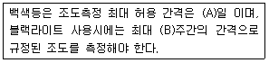

자기비파괴검사기능사 (2014-10-11 기출문제)
1과목: 자기탐상시험법
1. 전몰수침법을 이용하여 초음파탐상검사를 수행할 때의 장점이 아닌 것은?
- 주사속도가 빠르다.
- 결함의 표면 분해능이 좋다.
- 탐촉자 각도의 변형이 용이하다.
- 부품의 크기에 관계없이 검사가 가능하다.
(정답률: 69%)

2. 자분탐상검사에 사용되는 극간법에 대한 설명으로 옳은 것은?
- 두 자극과 직각인 결함 검출감도가 좋다.
- 원형자계를 형성한다.
- 자속의 침투깊이는 직류보다 교류가 깊다.
- 잔류법을 적용할 때 원칙적으로 교류자화를 한다.
(정답률: 64%)
3. 방사선에 대한 외부피폭 방어를 위해 차폐체를 설치하려고 한다. 가장 효과적인 차폐 물질은?
- 선 흡수계수가 큰 물질
- 반가층이 큰 물질
- 열전도율이 큰 물질
- 충격값이 큰 물질
(정답률: 73%)
4. 반영구적인 기록과 거의 모든 재료에 적용이 가능하지만 인체에 대한 안전관리가 요구되는 비파괴검사법은?
- 초음파탐상검사(UT)
- 방사선투과검사(RT)
- 와전류탐상검사(ECT)
- 침투탐상검사(PT)
(정답률: 89%)
5. 적외선 열화상법의 장점이 아닌 것은?
- 원격 검사가 가능
- 단시간에 광범위한 검사가 가능
- 결함의 형상을 시각적으로 추정 가능
- 측정시야의 변경이 자유로움
(정답률: 51%)
6. 와전류탐상시험에서 코일의 임피던스에 영향을 미치는 인자와 거리가 먼 것은?
- 전도율
- 표피효과
- 투자율
- 도체의 치수변화
(정답률: 58%)
7. 전자유도의 법칙을 이용하여 표면 또는 표면 가까운 부분(Sub-Surface)의 균열을 탐상하는 시험법은?
- 침투탐상시험
- 방사선투과시험
- 초음파탐상시험
- 와전류탐상시험
(정답률: 86%)
8. 침투탐상시험에 사용되는 현상제에서 습식 현상제와 비교할 때 건식 현상제의 장점으로 틀린 것은?
- 소량의 부품에 빠르고 적용이 쉽다.
- 대형부품에 적용이 용이하다.
- 자동분무식에 의한 적용이 용이하다.
- 표면이 매끄러운 부분에 효과적이다.
(정답률: 47%)
9. 다음 침투탐상시험법 중 자외선조사장치가 필요한 경우는?
- 수세성 염색침투액을 적용할 때
- 후유화성 염색침투액을 적용할 때
- 용제제거성 염색침투액을 적용할 때
- 수세성 형광침투액을 적용할 때
(정답률: 81%)
10. 전도성이 있는 재질에 효과적으로 검사할 수 있는 비파괴검사방법은 무엇인가?
- 방사선투과검사
- 초음파탐상검사
- 누설검사
- 와전류탐상검사
(정답률: 87%)
11. 누설검사(LT)의 방법을 크게 2가지로 나누면?
- 기포누설시험과 추적가스법
- 추석가스법과 내압시험
- 내압시험과 기밀시험
- 기밀시험과 기포누설시험
(정답률: 54%)
12. 초음파탐상검사의 근거리 음장에 대한 설명으로 잘못된 것은?
- 근거리 음장은 전동자 직경이 크면 길어진다.
- 근거리 음장은 주파수가 높으면 짧아진다.
- 근거리 음장은 초음파 속도가 빠르면 짧아진다.
- 근거리 음장은 초음파의 파장이 길면 짧아진다.
(정답률: 40%)
13. 다음 중 자분탐상으로 검사할 수 없는 재료는?
- 니켈
- 구리
- 탄소강
- 코발트
(정답률: 63%)
14. 비파괴검사방법에 따라 검출할 수 있는 결함의 종류로 옳은 것은?
- MT-균열이나 표면검사에 유리
- PT-균열이나 체적검사에 유리
- UT-미세한 기공 검출에 유리
- ECT-융합불량, 개재물에 유리
(정답률: 76%)
15. 선형자화에서 L/D의 비가 다음 중 어느 수치이하에서 코일법은 적용되지 않는가? (단, L은 시험체의 길이, D는 시험체의 직경이다.)
- 2
- 3
- 4
- 5
(정답률: 76%)
16. 자분탐상검사 후 습식자분에 대한 후처리작업이 필요한 가장 큰 이유는?
- 자분제거를 위하여
- 잔류자화 제거를 위하여
- 자분의 유동성을 높이기 위하여
- 전류를 원활히 하기 위하여
(정답률: 60%)
17. 형광자분탐상시험에 자외선조사등을 사용하는 가장 큰 이유는?
- 검사자의 눈을 보호하기 위하여
- 자기의 강도를 더 높이기 위하여
- 자분지시를 더 선명하게 보기 위하여
- 자기장을 육안으로 식별이 가능하도록 하기 위하여
(정답률: 78%)
18. 자분탐상시험시 시험코일에 흐르는 전류의 성질에 관한 설명으로 잘못된 것은?
- 시험코일의 전류는 코일의 저항이 작을수록 많이 흐르게 된다.
- 시험코일의 전류는 오직 코일 자체의 전도도에만 관계된다.
- 시험코일의 전류는 자장을 만든다.
- 코일 주위에 발생하는 자장의 영향을 받는다.
(정답률: 68%)
19. 다음 중 직류 사용이 가장 곤란한 자화법은?
- 극간법
- 잔류법
- 자속관통법
- 프로드법
(정답률: 30%)
20. 자분지시모양 기록 중 접착테이프에 그대로 붙여 보존하는 방식을 무엇이라 하는가?
- 판박이
- 전사
- 각인
- 복사
(정답률: 81%)
2과목: 자기탐상관련규격
21. 제철소 생산라인에서 압연품의 적충(lamination)이나 압출품의 파이프와 같은 결함의 검출을 위한 자분탐상검사법은?
- 축통전법으로 전면을 동시에 검사한다.
- 프로드나 극간법으로 두께방향의 단면을 검사한다.
- 프로드법으로 전면을 나누어 검사한다.
- 검사부품을 분리하여 내부를 광학장치로 검사한다.
(정답률: 60%)
22. 적은 전류값으로 한정된 부분검사에 필요한 자계를 형성시킬 수 있는 자화법은?
- 직각통전법
- 자속관통법
- 프로드법
- 전류관통법
(정답률: 59%)
23. 자성체의 자기적 성질을 표현하기 위하여 자력의 힘과 자계의 강도와의 관계를 표시한 것을 무엇이라 하는가?
- 자속밀도
- 포화곡선
- 자력선속
- 자기이력곡선
(정답률: 76%)
24. 자분탐상시험에서 불연속 검출능에 큰 영향을 미치는 검사액이 갖추어야 할 성질로 틀린 것은?
- 휘발성이 낮고 인화점이 높아야 한다.
- 시험면에 대한 적심성이 좋아야 한다.
- 검사액의 현탁성은 장시간 유지되어야 한다.
- 검사액은 형광성이어야 한다.
(정답률: 70%)
25. 잔류법으로 검사를 수행하는 과정에서 시험품표면에 날카로운 선 모양이 관찰되어, 의사지시 여부를 확인하기 위하여 탈자 후 재검사를 수행하였을 때는 지시가 나타나지 않았다. 이러한 지시를 발생시키는 원인은?
- 자기펜 흔적
- 단면 급변 지시
- 재질 경계 지시
- 표면 거칠기 지시
(정답률: 74%)
26. 중앙이 빈 원통형의 시험편으로써 인공적으로 드릴구멍을 표면에서 일정한 깊이 간격으로 가공하여 표면하의 불연속성을 측정하는데 사용되는 시험편은?
- 링 시험편
- 자장 지시계
- A형 표준시험편
- C형 표준시험편
(정답률: 59%)
27. 다음 중 자분탐상시험의 특징으로 잘못된 설명은?
- 연속법은 모든 강자성체에 적용이 가능하다.
- 건식법은 분산매로는 공기를 사용한다.
- 잔류법은 자화전류를 교류로만 사용 가능하다.
- 잔류법은 보자력이 큰 재료에만 적용이 가능하며, 연속법에 비해 검출능력이 떨어진다.
(정답률: 56%)
28. 철강재료의 자분탐상 시험방법 및 자분모양의 분류(KS D 0213)에서 자분의 적용을 B형 대비 시험편에는 연속법으로 제한하는 이유는?
- 대비시험편의 인공 흠이 시험면에서 깊은 곳에 있는 내부 흠이기 때문이다.
- 대비시험편이 사각으로 만들어져 있어 잔류법을 적용하기 어렵기 때문이다.
- 건식법을 대비시험편 관통구멍의 흠에 사용할 수 없기 때문이다.
- 습식 자분의 사용시 대비시험편에 잔류법을 사용할 수 없기 때문이다.
(정답률: 43%)
29. 철강재료의 자분탐상 시험방법 및 자분모양의 분류(KS D 0213)에 따라 “시험품에 가한 교류전류나 교류 자속이 표면의 가까운 부분에 모이는 현상”을 무엇이라 하는가?
- 교류효과
- 모서리 효과
- 표피 효과
- 자속효과
(정답률: 74%)
30. 항공우주용 자기탐상 검사방법((KS W 4041)에 따른 검사를 수행하는 시기에 관한 사항으로 틀린 것은?
- 제조공정 중에서 단조공정을 포함한 경우에는 단조공정을 거친 다음에 검사를 시행한다.
- 제조공정 중에서 용접공정을 포함한 경우에는 용접공정을 거친 다음에 검사를 시행한다.
- 제조공정 중에서 두꺼운 전기 크롬도금공정을 포함한 경우에는 도금공정을 거친 다음에 검사를 시행한다.
- 제조공정 중에서 기계가공공정을 포함한 경우에는 기계가공공정을 거친 다음에 검사를 시행한다.
(정답률: 62%)
31. 철강재료의 자분탐상 시험방법 및 자분모양의 분류(KS D 0213)에 따른 다음 표준 시험편 중 자분 모양을 나타내기 위하여 가장 높은 유효 자계 강도가 필요한 것은?
- A1-15/50
- A1-7/50
- A2-15/50
- A2-7/50
(정답률: 40%)
32. 항공우주용 자기탐상 검사방법((KS W 4041)에 따른 검사를 수행하는 시기에 관한 사항으로 틀린 것은?
- 기록된 모든 결과는 식별ㆍ분류하여야 한다.
- 검사한 각각의 부품과 로트까지도 추적할 수 있다.
- 기록 보존기간은 2년이다.
- 열처리 전과 후에 검사한 경우, 전의 기록은 필요 없다.
(정답률: 69%)
33. 철강재료의 자분탐상 시험방법 및 자분모양의 분류(KS D 0213)에 의한 시험조건의 특성상 시험체의 잔류법으로 검사해야 하는 경우, 가능하면 사용하지 않아야 할 자화전류의 종류는?
- 교류
- 직류
- 맥류
- 충격전류
(정답률: 45%)
34. 철강재료의 자분탐상 시험방법 및 자분모양의 분류(KS D 0213)에 자화방법 중 극간법의 부호를 나타내는 것으로 옳은 것은?
- C
- M
- I
- P
(정답률: 79%)
35. 철강재료의 자분탐상 시험방법 및 자분모양의 분류(KS D 0213)에서 일반적인 강 용접부를 연속법으로 탐상할 때 필요한 자계의 강도는?
- 1200~2000A/m
- 2400~3600A/m
- 3800~5600A/m
- 6400~8000A/m
(정답률: 52%)
36. 철강재료의 자분탐상 시험방법 및 자분모양의 분류(KS D 0213)에 따른 자화전류의 종류에 대한 설명으로 옳은 것은?
- 충격전류를 사용하여 자화하는 경우는 잔류법만으로 한다.
- 교류를 사용하여 자화하는 경우 원칙적으로 잔류법에 한한다.
- 직류 및 맥류를 사용하여 자화하는 경우 연속법만을 사용할 수 있다.
- 교류 및 충격전류를 사용하여 자화하는 경우 원칙적으로 내부흠의 검출에 한한다.
(정답률: 39%)
37. 철강재료의 자분탐상 시험방법 및 자분모양의 분류(KS D 0213)에 의한 형광자분탐상시험을 실시할 때 암실의 조도에 대한 설명으로 옳은 것은?
- 관찰면의 밝기가 20lx 이하이어야 한다.
- 관찰면의 밝기가 90lx 이하이어야 한다.
- 양실의 조도는 220lx 이하이어야 한다.
- 양실의 조도는 350lx 이하이어야 한다.
(정답률: 80%)
38. 항공우주용 자기탐상 검사방법((KS W 4041)에 따른 자분 현탁액에 관한 사항으로 틀린 것은?
- 미형광 자분의 용량은 규격에서 규정하는 농도시험으로 (1.0~2.4ml)/100ml 이어야 한다.
- 형광 자분의 용량은 규격에서 규정하는 농도시험으로 (0.1~0.5ml)/100ml 이어야 한다.
- 현탁액의 점도는 최대 5.0mm2/s 이하여야 한다.
- 조도가 변하는 조건인 경우 형광 자성 물질과 비형광 자성 물질 두가지를 모두 포함한 현탁액을 사용해야 한다.
(정답률: 49%)
39. 철강재료의 자분탐상 시험방법 및 자분모양의 분류(KS D 0213)에서 시험기록을 작성할 때 자화전류치는 파고치로 기재한다. 코일법인 경우에는 (A)를 부기한다. 또 프로드법의 경우는 (B)를 부기한다. ( ) 안에 들어갈 내용은?
- A : 적용시기, B : 자화방법
- A : 시험기술자, B : 표준시험편
- A : 코일의 치수, B : 프로드 간격
- A : 시험장치, B : 자분모양
(정답률: 87%)
40. 철강재료의 자분탐상 시험방법 및 자분모양의 분류(KS D 0213)에서 길이가 서로 다른 3개의 선형지시가 거의 일직선상에서 검출되었다. 순서대로 지시 ①의 길이는 15mm, 지시 ②는 3mm, 지시 ③는 10mm, 이 지시들 사이의 간격은 순서대로 4mm, 3mm일 때 기준에 의한 지시 ②의 길이는?
- 3mm
- 13mm
- 16mm
- 28mm
(정답률: 69%)
3과목: 금속재료일반 및 용접일반
41. 철강재료의 자분탐상 시험방법 및 자분모양의 분류(KS D 0213)에 따른 탐상의 적용범위에 해당되지 않는 재료는?
- 주강품
- 세라믹
- 철강품
- 강용접부
(정답률: 87%)
42. 항공우주용 자기탐상 검사방법((KS W 4041)의 조명 장치 및 조도에 대한 보기 내용 중 ( ) 안에 알맞은 수치는?

- A : 30, B : 1
- A : 60, B : 1
- A : 90, B : 2
- A : 180, B : 2
(정답률: 49%)
43. 36% Ni에 약 12%Cr이 함우된 Fe 합금으로 온도의 변화에 따른 탄성을 변화가 거의 없으며 지진계의 부품, 고급 시계의 재료로 사용되는 합금은?
- 인바(invar)
- 코엘린바(coelinvar)
- 엘린바(elinvar)
- 슈버인바(superinvar)
(정답률: 49%)
44. 결정구조의 변화없이 전자의 스핀 작용에 의해 강자성체인 a-Fe 이 상자성체인 a-Fe 로 변태되는 자기변태에 해당하는 것은?
- A1변태
- A2변태
- A3변태
- A4변태
(정답률: 71%)
45. 감쇠능이 커서 진동을 많이 받는 방직기의 부품이나 기어 박스 등에 많이 사용되는 재료는?
- 연강
- 회주철
- 공석강
- 고탄소강
(정답률: 58%)
46. 주철, 탄소강 등은 질화에 의해서 경화가 잘 되지 않으나 어떤 성분을 함유할 때 심하게 경화시키는지 그 성분들로 옳게 짝지어진 것은?
- Al, Cr, Mo
- Zn, Mg, P
- Pb, Au, Cu
- Au, Ag, Pt
(정답률: 59%)
47. 공구용 재료로서 구비해야 할 조건이 아닌 것은?
- 강인성이 커야 한다.
- 마멸성이 커야 한다.
- 열처리와 공작이 용이해야 한다.
- 상온과 고온에서의 경도가 높아야 한다.
(정답률: 73%)
48. 금속의 격자결함이 아닌 것은?
- 가로결함
- 적층결함
- 전위
- 공공
(정답률: 46%)
49. 철강은 탄소함유량에 따라 순철, 강, 주철로 구별한다. 순철과 강, 강과 주철을 구분하는 탄소량은 약 몇 %인가?
- 0.025%, 0.8%
- 0.025%, 2.0%
- 0.80%, 2.0%
- 2.0%, 4.3%
(정답률: 60%)
50. 재료가 지니고 있는 질긴 성질을 무엇이라 하는가?
- 취성
- 경성
- 강성
- 인성
(정답률: 80%)
51. 높은 온도에서 증발에 의해 황동의 표면으로부터 Zn이 탈출되는 현상은?
- 응력 부식 탈아연 현상
- 전해 탈아연 부식 현상
- 고온 탈아연 현상
- 탈락 탈아연 메짐 현상
(정답률: 83%)
52. 재료를 실온까지 온도를 내려서 다른 형상으로 변형시켰다가 다시 온도를 상승시키면 어느 일정한 온도 이상에서 원래의 형상으로 변화하는 성질을 이용한 합금으로 대표적인 합금이 Ni-Ti계인 합금의 명칭은?
- 형상기억합금
- 비정질
- 클래드합금
- 제진합금
(정답률: 82%)
53. 냉간 가공한 7:3 황동판 또는 봉 등을 185~260℃에서 응력 제거 풀림을 하는 이유는?
- 강도증가
- 외관 향상
- 산화막 제거
- 자연균열 방지
(정답률: 59%)
54. Al-Si 계 합금의 설명으로 틀린 것은?
- 10~13%의 Si가 함유된 합금을 실루민이라 한다.
- Si의 함유량이 증가할수록 팽창계수와 비중이 높아진다.
- 디스캐스팅시 용탕이 급랭되므로 개량처리 하지 않아도 조직이 미세화된다.
- Al-Si계 합금 용탕에 금속나트륨이나 수산화나트륨 등을 넣고 10~50분 후에 주입하면 조직이 미세화된다.
(정답률: 48%)
55. 18-4-1형 고속도 공고강의 주요 합금 원소가 아닌 것은?
- Cr
- V
- Ni
- W
(정답률: 55%)
56. 선철 원료, 내화 재료 및 연료 등을 통하여 강 중에 함유되며 상온에서 충격값을 저하시켜 상온 메짐의 원인이 되는 것은?
- Si
- Mn
- P
- S
(정답률: 48%)
57. 네이벌 황동(Naval Brass)이란?
- 6:4 황동에 Sn을 약 0.75~1% 정도 첨가한 것
- 7:3 황동에 Mn을 약 2.85~3% 정도 첨가한 것
- 3:7 황동에 Pb을 약 3.55~4% 정도 첨가한 것
- 4:6 황동에 Fe을 약 4.95~5% 정도 첨가한 것
(정답률: 69%)
58. 다음 중 점용접 조건의 3요소가 아닌 것은?
- 전류의 세기
- 통전시간
- 너깃
- 가압력
(정답률: 75%)
59. 납땜용제의 구비조건 중 틀린 것은?
- 땜납재의 융점보다 낮은 온도에서 용해되어 산화물을 용해하고 슬래그로 제거될 것
- 납땜 중 납땜 부 및 땜납재의 산화를 방지할 것
- 모재 및 납에 대한 부식 작용 클 것
- 용재의 유동성이 양호하여 좁은 간극까지 잘 침투할 것
(정답률: 75%)
60. 아크전류 150A, 아크전압 30V, 용접속도 10cm/min인 경우 용접의 단위길이당 발생하는 용접입열은 약 몇 joule/cm인가?
- 27000
- 90000
- 9000
- 45000
(정답률: 54%)